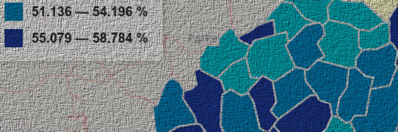

"What is the marker of good design? It moves... Design gains value as it moves from hand to hand; context to context; need to need." - Frank Chimero
Introduction
I will admit that I still do not consider myself a good front-end developer or designer despite my best efforts, but I think the challenge of trying to be creative in web design is what keeps me coming back to this challenging set of concepts. Since my focus has been on data science and GIS, I often opted to find web page and dashboard templates that I could simply drop in, modify, and represent data to customers in an “efficient enough” manner. Due to the work of many incredibly talented web developers and designers, I never really had to engage with all that goes into building good HTML and CSS nor did I have to engage with JavaScript (something I always hated manipulating and programming in). However, I was long overdue for a change in my mindset towards all of the above.
I recently started taking a UX/UI course through the New Maps Plus Program at the University of Kentucky (a program that I can’t recommend highly enough). This forced me to really open my eyes in reconsideration of all the misconceptions I had about serious web development and front-end design. New Maps Plus not only addressed my long-standing neglect with these, but did so using cartography and interactive data visualizations (two things I absolutely love in a great data journalism article or website). The following sections cover the biggest takeaways thus far from my adventures and struggles with front-end web development.
 Household Composition in West VirginiaForget What You Think You Know
I came into the UX/UI course with a chip on my shoulder: I did not like doing anything in JavaScript. If I could wrap anything I was doing with Python so that I didn’t have to touch JavaScript, I did. However, this was due to my misunderstanding of JavaScript and my laziness in not dedicating enough time to program in JavaScript and to understand all that could be done with it in web development and beyond.
Once I let go of my ignorance and stubbornness, I was able to understand and really enjoy developing in JavaScript. In many ways, I improved the data science work I was already doing with a number of new skill sets. I use to urge newcomers to programming to start with something like Python. However, if you are new to programming and are looking to start with web development, I’m now more prone to point you at Bootstrap and Node than at Django and Flask. Understanding the former will make the experience of the latter much more rewarding.
 Rates of Unemployment in the US
Rates of Unemployment in the US
Struggle Better
Much like learning any new skill, you have to make it matter to you. You should also try to make it as “fun” as possible: “gamify” projects and make them relevant to things that you have a passion for. I did not take a UX/UI course because I wanted to advance a career in web development; I wanted to make my research and data service products more visually effective and pleasing to the viewers. I challenged myself using areas of interest I enjoyed (e.g., maps and interactive data visualizations) and with materials that intrigued me (e.g., data sets I considered cool). This ultimately pushed me to obtain and adapt my knowledge in a way that positively reinforced the processes and experiences.
This is not to say that I don’t struggle with new topics: we all do. But you have to make that struggle matter and at the end you have to say not only was it worth it, but I can now help myself and others using all of my hard-earned experience.
 Kenya: Education and Progress
Kenya: Education and Progress
You Have To Feel
One of the best part of the UX/UI course was the introduction of conceptual literature on design. From QT to Electron, I had used frameworks and build UIs, but never once had I been told why to build things in a certain way or why to abandon all of those guidelines for something better. Frank Chimero’s book, The Shape of Design, really opened my eyes to how a person or group should approach UI development for another group of people. I realized how much I had neglected the UX aspect of any website or data visualization I had previously built.
This failure was not largely because the things I built were bad or didn’t function, it was due to the fact that I had not considered how the user would feel about what I built or consider it worth their time. I never considered how the colors and arrangement could be “beautiful” to a viewer or how narrative and flow “affect” the people my creation is meant to assist in understanding something. I started to understand that once my front-end was built, that was only the beginning of my work; I had to then take that product and consider who would be using it and how I could make it better for them. This is probably the biggest takeaway for me thus far.
 Submarine Cables
Submarine Cables
Keep Doing It
Any person that uses code in their work will tell you that programming is a perishable skill; if you don’t use it, you lose it. The same thing goes for good design. Read up everyday on good design practices, not just in areas that are relevant to you. A web developer can learn a lot about color theory from interior designers and a lot about arrangement from architects.
Find inspiration everywhere.
If you’re able to find inspiration in the everyday, your work will reflect the techniques and sensitivities to the world that you built it for and the return to you as the developer and designer will be many times more than the simplified approach of requirements-based development practices.
You want your work to do more than just work; you want your work to move others.
References
Eloquent JavaScript
The Shape of Design
Laws of UX
This work is licensed under a Creative Commons Attribution-NonCommercial-ShareAlike 4.0 International License.